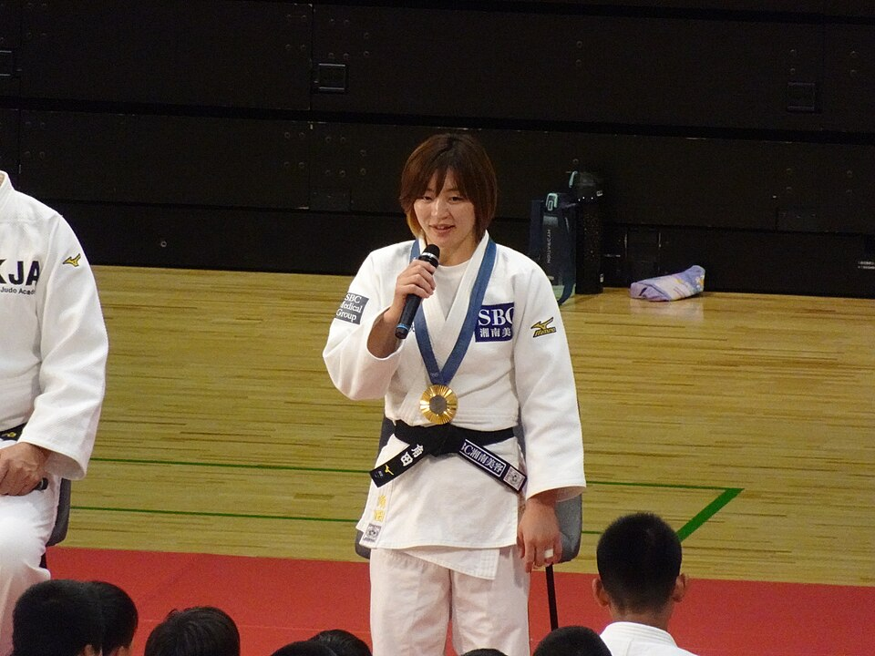

格闘技
•
柔道 / 女子48kg級
つのだ なつみ
角田 夏実
Natsumi Tsunoda
🏢 所属: SBCメディカルグループ
🏅 パリ五輪金メダル（日本選手団第1号）🏅 世界選手権3連覇🏅 巴投・関節技の達人
必殺の巴投と電光石火の腕挫十字固。円熟の技で世界をねじ伏せる柔道界のレジェンド
経歴・これまでの歩み
八千代高校、東京学芸大学を経て了徳寺大学職などを歴任。遅咲きながら階級を変更した48kg級で才能が大爆発。2021年から世界選手権3連覇。2024年パリ五輪では日本選手団の金メダル第1号に輝いた。
主要大会ハイライト戦績
2024年
パリオリンピック
女子48kg級 金メダル
2023年
ドーハ世界柔道
女子48kg級 金メダル（3連覇）
2022年
タシケント世界柔道
女子48kg級 金メダル
プレイスタイル＆世界を制する武器
相手の足元に深く滑り込み天井へ跳ね上げる「巴投」と、そこから間髪入れずに極める「腕挫十字固」。相手が警戒していても掛かる魔術のような技術体系を持ちます。
愛知・名古屋2026への決意とメッセージ
大会スケジュール＆観戦のツボ
🗓️ 出場予定日程・会場
2026年9月22日 女子48kg級（愛知県武道館）
👀 観戦の注目ポイント
相手が宙を舞う巴投の美しさと、寝技に入った瞬間に勝負を決める極め技の早業。